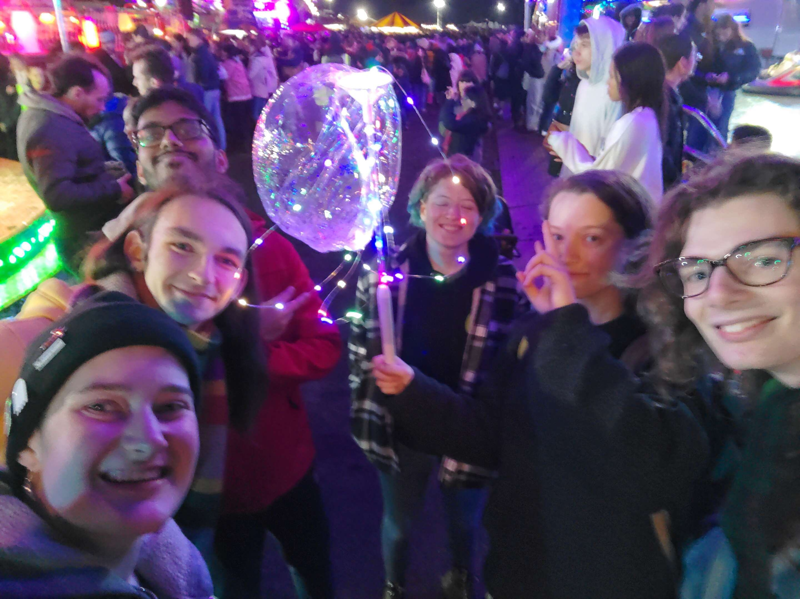

Ok so, first attempt at a regular site update. The first one where I try to answer the all important question: What did I actually do with the last week of my life.
Well to start off I made the website. Is it complicated? No. But, there's a little site for me to waffle on now. I made a Turner painting flash and learned how to link different pages, which is progress. I do still want to make the CSS look much nicer and make the site more interactive and fun, but I'm focusing on content for now so that I don't just end up putting that off and having an empty yet nice looking site. I also need to get a little better at writing things throughout the week for the because I'll be honest I've already forgotten everything that I did.
I'm officially no longer training at work, which means I technically know how everything functions and runs, and what I'm supposed to be doing. This isn't true but I can believe it until something goes wrong next time I go in. I'm also now learning to coach rowing apparently, which I'm glad about, and it will be fun, but I apologise in advance to anyone I give any advice to at all over the next few weeks, theres a solid chance it's just incorrect. The only rowing I can claim I did this week was the WCBC ergatta, which was a 6 person relay with each person sprinting 500m. Our team didn't win but we were also significantly cooler.
Surprisingly, I actually did some maths. Everything makes a lot more sense than it did when I was 13 but I still don't think I'm passing the A-Level at this rate. Still, it's quite fun and a lot less repetitive than the irregular principle parts I'm trying to learn before I start working on my Greek again. I did have a look at some of the philosophy from Michaelmas last year and I'm delighted to report I've forgotten all of the formal logical notation that I learned, so thats something fun I can recap over this week.
This week (WC 29th) is looking a lot busier and a lot more productive. Today I'm marshalling a boat race for the first time, and I'm going to attempt to finish my book from last week (I started with a long one too late in the week, but I think that I can get through two this week).
Here's to week of drinking an obscene amount of drinks from Pret and hopefully getting some exercise done finally.
For some quick context, I'm writing this one on Thursday the week after I was supposed to, so rather than remember what I did I'm following a slightly patchy breadcrumb trail left by my past self, and my past self was apparently being followed by a little bird who loves breadcrumbs.
Halloween happened! I don't get the points for remembering this one because it did happen for everyone, and it does just say when it is on a calendar. I started the day in Pret as is usual and continued to read Babel, then went to the Radcliffe Science Library, because they has spinny armchairs, which is enough justification to go there. I made minor progress with some maths, but this was interrupted by a meeting in the Lamb & Flag with a group of people from summer school from 2022.
We went to the cinema, and I can now say I've seen The Shining, however thats really the main advantage of having now seen The Shining. Likely due to the fact that we watched the extended cut, there was an extensive amount that should have been cut. I did enjoy the surreal atmosphere of the whole film, but I found that I felt the suspense undercut itself too many times from the beginning to be enjoyable in the end. Following the cinema we went to the Jolly Farmers, which was more full than I've ever seen it, where we stayed 'till around midnight, when we decided to be sensible adults and leave.
I came through on last weeks promise and finally did do some exercise. Annoyingly it's still fun and makes me feel better about being a human. This will not stop me complaining about it though. Running does not fulfil my soul, and can't yet be in any way described as fun. But I think it will get there, so I'm going to stick with it until I give in and buy a gym membership so I can erg again.
To round off the week we went and watched the fireworks in South Parks, which is always an enjoyable experience. Unwilling to spend £5 on the bumper cars I decided to just watch, which ended up being the correct decision, as I witnessed first hand the violent and bloody demise of this years Orb (pictured below). I think my docs will never be the same colour again, but I got to see some fireworks, and eat some take away chicken, which is always a good end to a day. Oh and after this I learned to play blackjack, so keep an eye out for me in your local gambling establishment.
One thing I've realised I'm not going to be able to capture in these weekly updates is the people I'm hanging out with and seeing because I'm far to emotionally repressed to express a personality using words. If you're reading this you likely know me anyway, so just assume I saw you at some point in the week and that it improved my day.
Here's to another week of getting slightly less than intended done.